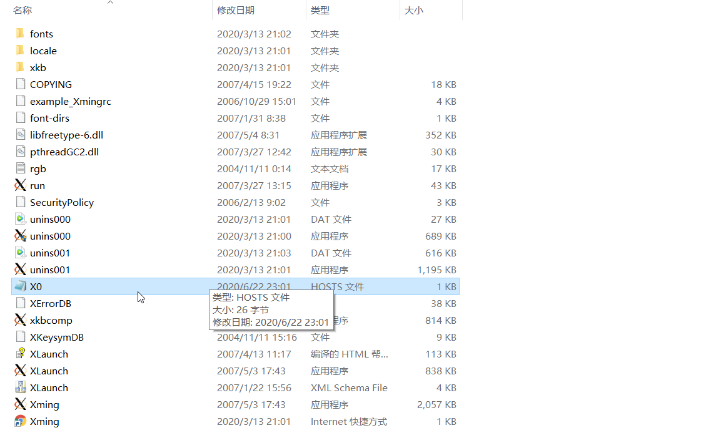
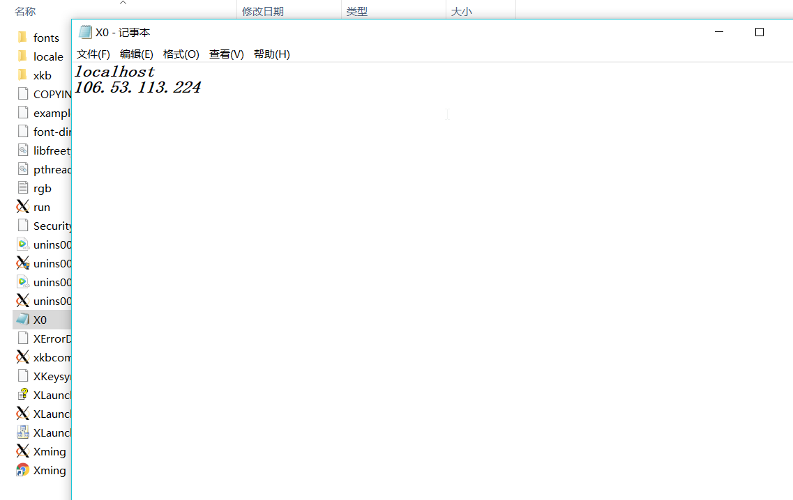
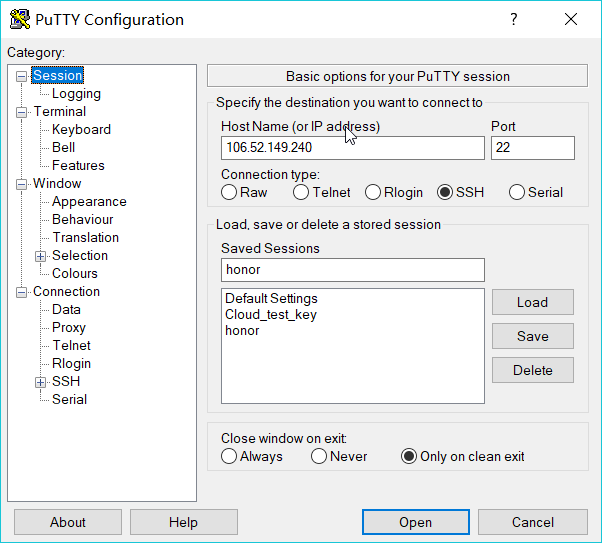
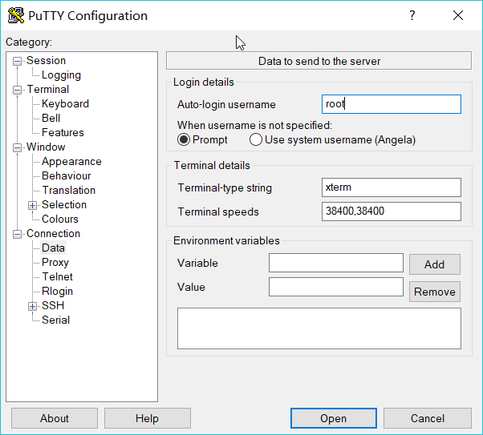
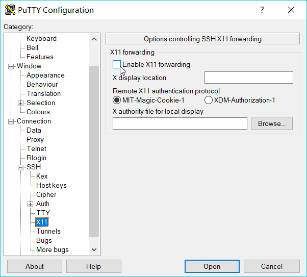
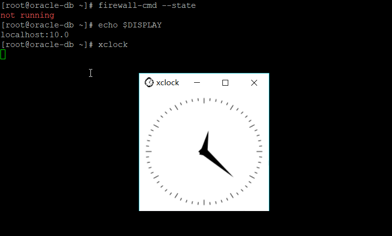

- 过几个月的学习，以及在期末的努力（逼迫）下，我从网络上找到了许多有用的攻略，终于让我能够快速的借用Putty和Xming来启动GUI，在此感谢乐于分享的大佬们！我也将我从网上找来的知识整理归纳，写这篇文章来巩固知识和帮助他人。
#准备&目标
- 准备：Putty、Xming、Linux服务器。
- 目标：在Linux界面启动xclock。
#操作
##0.Xming配置
- 打开Xming文件夹，找到X0.hosts文件（以记事本方式）并打开，在localhost下面添加Linux服务器的Ip地址（localhost不存在则自己手动添加）。
- ！X0.hosts文件一般是存在的，不存在则先启动一次Xlaunch ！
- ！图中106.52.149.240是我Linux的Ip地址，需替换为所选择的Linux的Ip地址 ！


##1.Putty配置
- 打开Putty，输入Ip

左侧选择Data，Auto-login username输入root
（可选）点击SSH，选择AUTH，在Private key那选择你的私钥

点击SSH，选择X11，选择Enable X11 forwarding
点击Open
##2.Linux配置进入root界面，若没有私钥则需输入密码登录（第一次登录时会提示保存信息，选择yes）

安装（检查是否安装如下程序）
`yum groupinstall "X Window System"`yum install gnome-classic-session gnome-terminal nautilus-open-terminal control-center liberation-mono-fontsyum install xorg-x11-apps（可选）打开密码登录，找到PasswordAuthentication，并改为yes
vi /etc/ssh/sshd_config
重启
reboot查看防火墙（这是centOS 7以上的，其他版本请自行查询）处于关闭状态
firewall-cmd --state查看DISPLAY
echo $DISPLAY打开xclock
xclock

#总结
到此整个流程就结束了，如果想要在oracle用户下打开GUI的话，需要以oracle用户打开一个session才能进行GUI操作。操作完成之后会发现整个过程并不难，只不过其中的意义需要更深入地去探索，了解，才能更好的理解它的含义。在写这篇文章时，我对于其中的一些设置并不清楚它的用处，只是照猫画虎而已。所以路还很长，需要更加努力的向前走！
#备注（以后会写的文章？）
- 0.私钥公钥的原理
- 1.DISPLAY为什么要是localhost:10.0才能启动GUI
- 2.为什么从root用户到oracle用户后不能启动GUI
- 3.使用DISPLAY=localhost:0.0为什么打开不了GUI
最后再次感谢网络上分享技巧的大佬们！！！
END